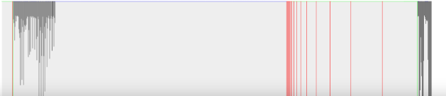
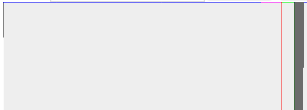

Unhosted Adventures
A handbook about unhosted web apps
4. WebSockets
No Cookie Crew - Warning #2: For this tutorial you will need to update your personal server using an ssh/scp client.
WebSockets are a great way to get fast two-way communication working between your unhosted web app and your personal server. It seems the best server-side WebSocket support, at least under nodejs, comes from SockJS. Try installing this nodejs script:
var sockjs = require('sockjs'),
fs = require('fs'),
https = require('https'),
config = require('./config.js').config;
function handle(conn, chunk) {
conn.write(chunk);
}
var httpsServer = https.createServer({
key: fs.readFileSync(config.tlsDir+'/tls.key'),
cert: fs.readFileSync(config.tlsDir+'/tls.cert'),
ca: fs.readFileSync(config.tlsDir+'/ca.pem')
}, function(req, res) {
res.writeHead(200);
res.end('connect a websocket please');
});
httpsServer.listen(config.port);
var sockServer = sockjs.createServer();
sockServer.on('connection', function(conn) {
conn.on('data', function(chunk) {
handle(conn, chunk);
});
});
sockServer.installHandlers(httpsServer, {
prefix:'/sock'
});
console.log('Running on port '+config.port);
and accompany it by a 'config.js' file in the same directory, like this:
exports.config = {
tlsDir: '/path/to/tls',
port: 1234
};
Start this script with either 'node script.js' or 'forever start script.js', and open this unhosted web app in your browser:
<!DOCTYPE html lang="en">
<html>
<head>
<meta charset="utf-8">
<title>pinger</title>
</head>
<body>
<p>
Ping stats for wss://
<input id="SockJSHost" value="example.com:1234" >
/sock/websocket
<input type="submit" value="reconnect"
onclick="sock.close();" >
</p>
<canvas id="myCanvas" width="1000" height="1000"></canvas>
</body>
<script>
var sock,
graph = document.getElementById('myCanvas')
.getContext('2d');
function draw(time, rtt, colour) {
var x = (time % 1000000) / 1000;//one pixel per second
graph.beginPath();
graph.moveTo(x, 0);
graph.lineTo(x, rtt/10);//1000px height = 10s
graph.strokeStyle = colour;
graph.stroke();
graph.fillStyle = '#eee';
graph.rect(x, 0, 100, 1000);
graph.fill();
}
function connect() {
sock = new WebSocket('wss://'
+document.getElementById('SockJSHost').value
+'/sock/websocket');
sock.onopen = function() {
draw(new Date().getTime(), 10000, 'green');
}
sock.onmessage = function(e) {
var sentTime = parseInt(e.data);
var now = new Date().getTime();
var roundTripTime = now - sentTime;
draw(sentTime, roundTripTime, 'black');
}
sock.onclose = function() {
draw(new Date().getTime(), 10000, 'red');
}
}
connect();
setInterval(function() {
var now = new Date().getTime();
if(sock.readyState==WebSocket.CONNECTING) {
draw(now, 10, 'green');
} else if(sock.readyState==WebSocket.OPEN) {
sock.send(now);
draw(now, 10, 'blue');
} else if(sock.readyState==WebSocket.CLOSING) {
draw(now, 10, 'orange');
} else {//CLOSED or non-existent
draw(now, 10, 'red');
connect();
}
}, 1000);
</script>
</html>
Here is a data URL for it. Open it, replace 'example.com:1234' with your own server name and leave it running for a while. It will ping your server once a second on the indicated port, and graph the round-trip time. It should look something like this:

I have quite unreliable wifi at the place I'm staying now, and even so you see that most packets eventually arrive, although some take more than 10 seconds to do so. Some notes about this:
- The client uses the bare WebSocket exposed by the SockJS server, so that we do not need their client-side library, and mainly because on a connection as slow as mine, it would keep falling back to long-polling, whereas I know my browser supports WebSockets, so I do not need that backdrop.
- I spent a lot of time writing code that tries to detect when something goes wrong. I experimented with suspending my
laptop while wifi was down, then restarting the server-side, and seeing if it could recover. My findings are that it
often still recovers, unless goes into readyState 3 (
WebSocket.CLOSED). Whenever this happens, I think you will lose any data that was queued on both client-side and server-side, so make sure you have ways of resending that. Also make sure you discard the closed WebSocket object and open up a new one. - The WebSocket will time out after 10 minutes of loss of connectivity, and then try to reconnect. In Firefox it does this with a beautiful exponential backoff. The reconnection frequency slows down until it reaches a frequency of once a minute.
- When you have suspended your device (e.g. closed the lid of your laptop) and come back, you will see it flatlining in blue. Presumably it would do another dis- and reconnect if you wait long enough, but due to the exponential backoff, you would probably need to wait up to a minute before Firefox attempts reconnection. So to speed this up, you can click 'Reconnect'. The line in the graph will go purple (you will see 'sock.readyState' went from 1 (open) to 2 (closing), and a few seconds later it will dis- and reconnect and you are good again. We could probably trigger this automatically, but for now it's good enough.
- There is another important failure situation; my explanation is that this happens when the server closes the connection, but is not able to let the client know about this, due to excessive packet loss. The client will keep waiting for a sign of life from the server, but presumably the server has already given up on the client. I call this "flatlining" because it looks like a flat line in my ping graph. Whenever this happens, if you know that the packet loss problem was just resolved, it is necessary to reconnect. It will take a few seconds for the socket to close (purple line in the graph), but as soon as it closes and reopens, everything is good again. The client will probably always do this after 10 minutes, but you can speed things up this way. This is probably something that can be automated - a script could start polling /sock/info with XHR, and if there is an http response from there, but the WebSocket is not recovering, presumably it is better to close and reopen.
- Chrome and Safari, as opposed to Firefox, do not do the exponential backoff, but keep the reconnection frequency right up. That means that in those browsers you probably never have to explicitly close the socket to force a reconnect. I did not try this in Explorer or Opera.
- Firefox on Ubuntu is not as good at detecting loss of connectivity as Firefox on OSX. This even means the WebSocket can get stuck in
WebSocket.CLOSINGstate. In this case, you have to manually callconnect();from the console, even though the existing WebSocket has not reachedWebSocket.CLOSEDstate yet.
As another example, here's what disconnecting the wifi for 15 minutes looks like:
And this is what "flatlining" looks like - the point where it goes purple is where I clicked "Reconnect".
All in all, WebSockets are a good, reliable way to connect your unhosted web app to your personal server. Next week, as promised, we will use a WebSocket for a Facebook and Twitter gateway running in nodejs. So stay tuned!